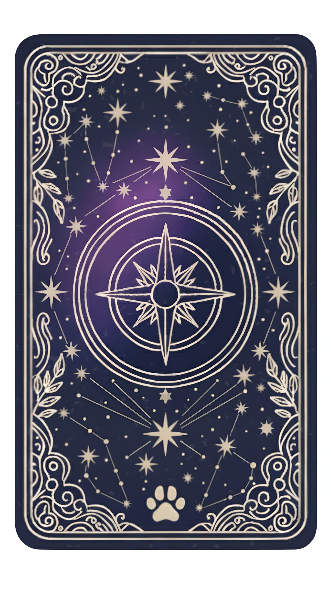

EarthSign.Oracles
✨ Daily Oracle Card Drawing ✨
Welcome! I’m so happy you’ve stepped into this quiet corner of love. I created this space as a gentle sanctuary for you, a place where you can take a moment to quiet yourself down and breathe amidst the noise of our busy world. Sometimes, all we really need is just a moment of stillness to see our own reflection.
These 32 oracle guides were birthed from love to help you bridge the gap between your daily life and your inner spirit. Somewhere in this deck, a hidden gift is waiting for you.
To begin, simply take a deep breath, hold a gentle question in your heart, and let your intuition guide you to draw your card.
